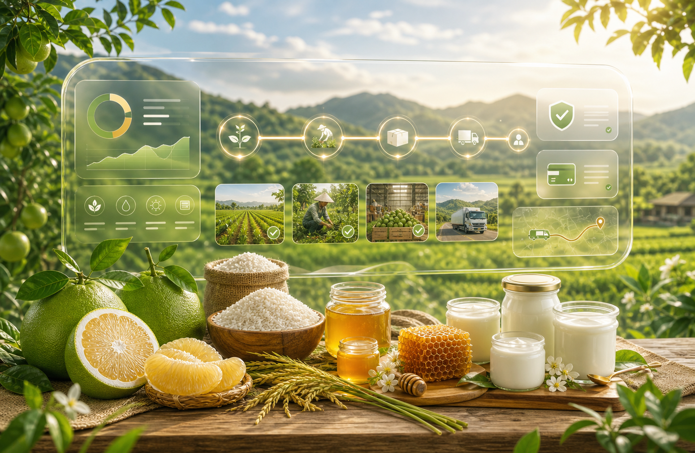

Thẩm định vườn
Xác minh vị trí, năng lực sản xuất, lịch sử mùa vụ và rủi ro địa phương.
 AGRISHARE
Đầu tư nông nghiệp - Chia sẻ giá trị - Gắn kết tương lai
Bắt đầu đầu tư
AGRISHARE
Đầu tư nông nghiệp - Chia sẻ giá trị - Gắn kết tương lai
AGRISHARE
Đầu tư nông nghiệp - Chia sẻ giá trị - Gắn kết tương lai
Bắt đầu đầu tư
AGRISHARE
Đầu tư nông nghiệp - Chia sẻ giá trị - Gắn kết tương lai
Nền tảng đầu tư nông nghiệp
Cùng nông dân phát triển vườn cây, theo dõi sản xuất theo thời gian thực và nhận giá trị từ nông sản sạch, minh bạch, có truy xuất.
Mô hình vận hành
AgriShare thiết kế như một hệ điều hành cho trang trại nhỏ: dự án được thẩm định, giải ngân theo giai đoạn, cập nhật nhật ký, camera, GPS, hợp đồng điện tử và báo cáo lợi nhuận sau thu hoạch.
Xác minh vị trí, năng lực sản xuất, lịch sử mùa vụ và rủi ro địa phương.
Công bố mức vốn, sản phẩm, thời gian thu hoạch và lợi nhuận đầu tư.
Minh bạch đầu tư, chi trả theo mốc tiến độ đã xác nhận.
Nông sản được bán, đảm bảo chất lượng, trải nghiệm thực tế.
Marketplace đầu tư
Thông tin bán hàng
Bưởi giao theo thùng 5-10kg; gạo theo túi 5kg hoặc 10kg; mật ong dú theo hũ/chai; sữa chua theo lốc hoặc thùng lạnh.
Giá trị sản phẩm nhận lại được quy đổi theo gói đầu tư, mùa vụ, quy cách đóng gói và xác nhận cuối cùng từ AgriShare trước khi thanh toán.
Khách có thể nhận tại nhà hoặc trải nghiệm và nhận sản phẩm tại farm. Sữa chua và sản phẩm cần bảo quản lạnh sẽ được ưu tiên giao theo lịch gần.
AgriShare tiếp nhận đổi/bù khi sản phẩm sai quy cách đã xác nhận, hư hỏng do giao nhận hoặc không đạt trạng thái chất lượng cam kết.
Hồ sơ niềm tin
Mỗi sản phẩm trên AgriShare được tổ chức thành hồ sơ bán hàng gồm nhà sản xuất, ảnh nhận diện, link Facebook, quy cách sản phẩm, quyền lợi gói đầu tư, biên lai, nhật ký mùa vụ và lịch giao nhận.
Logo, kênh Facebook, câu chuyện sản phẩm và vùng sản xuất được đặt trực tiếp trong Marketplace.
Farm team có thể cập nhật nhật ký mùa vụ, chỉ số chất lượng và ảnh thực tế trong trang admin.
Khách gửi biên lai, admin xác nhận thanh toán, hệ thống tạo biên nhận để in hoặc lưu PDF.
Ước tính dòng tiền
Công cụ này giúp nhà đầu tư hiểu nhanh kịch bản lợi nhuận trước khi xem hợp đồng chi tiết. Kết quả chỉ là ước tính ban đầu và sẽ được xác nhận lại theo từng gói sản phẩm.
Dashboard vận hành
Nhập mã đơn AgriShare để xem trạng thái tư vấn, thanh toán, nhật ký xử lý, giao nhận sản phẩm và biên nhận của đơn hàng.
Theo dõi đơn đã mua
Sau khi khách gửi đơn đầu tư, hệ thống tạo mã đơn. Khách có thể dùng mã này để kiểm tra trạng thái thanh toán, lịch giao hàng hoặc lịch trải nghiệm farm.

Lợi ích cho người nông dân
Khi tham gia AgriShare, nhà nông không chỉ bán nông sản sau thu hoạch mà có thể biến mùa vụ thành một dự án minh bạch: gọi vốn trước, tổ chức sản xuất theo kế hoạch, cập nhật tiến độ và kết nối trực tiếp với khách hàng tin tưởng sản phẩm của mình.
Quản trị rủi ro
Mỗi đơn có mã tra cứu, trạng thái xử lý, chứng từ thanh toán và biên nhận để khách hàng theo dõi sau khi đặt đầu tư.
Sản phẩm được quản lý theo quy cách đóng gói, ghi chú chất lượng, hình ảnh minh chứng và nhật ký mùa vụ từ farm.
Khách gửi mã giao dịch hoặc upload biên lai; admin xác nhận trạng thái thanh toán trước khi chuyển sang bước sản xuất/giao nhận.
Đơn hàng lưu hình thức nhận sản phẩm, địa chỉ, lịch hẹn, mã vận đơn và chính sách đổi/bù nếu sai quy cách đã xác nhận.
Lộ trình mở rộng
Chuẩn hóa hồ sơ bưởi, gạo, mật ong dú và sữa chua; kiểm tra luồng đặt đầu tư, biên lai, admin và giao nhận.
Bổ sung ảnh thật, chứng nhận, nhật ký mùa vụ định kỳ, quy trình đổi/bù và thông báo tự động cho khách hàng.
Tích hợp cổng thanh toán, vận chuyển, CRM chăm sóc khách hàng và dashboard dữ liệu cho nhà sản xuất.

Sẵn sàng triển khai
AgriShare hiện đã có Marketplace sản phẩm, form đặt đầu tư, MongoDB, admin vận hành, upload chứng từ, nhật ký mùa vụ, phân quyền và biên nhận đơn hàng.
Khám phá dự án